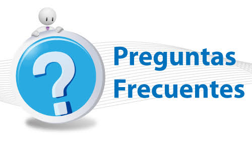

¿Cómo funcionan los reembolsos?
Puedes solicitar la devolución total de tu dinero si has jugado menos de 2 horas y la compra fue en los últimos 14 días.
Pro Games
Encuentra respuestas rápidas sobre compras, cuentas de usuario, reembolsos y descargas.

Pro Games garantiza transacciones seguras mediante cifrado SSL y compatibilidad total con métodos de pago locales e internacionales.
Puedes solicitar la devolución total de tu dinero si has jugado menos de 2 horas y la compra fue en los últimos 14 días.
Sí, la plataforma cuenta con un modo sin conexión para que disfrutes de tus juegos para un jugador en cualquier momento.
Ingresa al cliente, ve a la sección de añadir juego e introduce el código alfanumérico provisto.